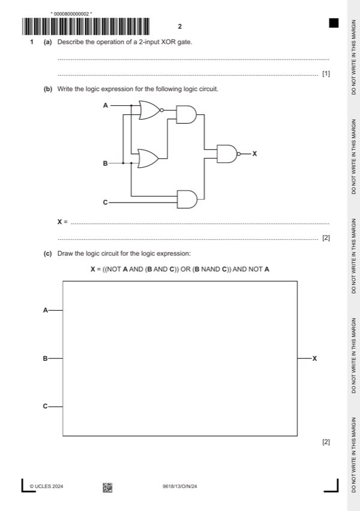

Question 1

Original paper page 2
Part 1(a) — solution
1 mark for: 1
Output is only 1 if one input is 1 and the other is 0 // Output is only 1 if both
inputs are different // Output is only 0 if both inputs are the same
Mark points
- Include the ideas shown in the solution above.
Part 1(b) — solution
- ((A NOR B) AND (A OR B))
- NAND (B AND C)
Mark points
- ((A NOR B) AND (A OR B))
- NAND (B AND C)
Part 1(c) — solution
1 mark for NOT gate, 2 correct AND gates and the NAND gate 2
Mark points
- Include the ideas shown in the solution above.
Part 1 — solution
mark for OR gate and the final AND gate
Mark points
- Include the ideas shown in the solution above.
Part 1 — solution
Answer: ADD 54
ADD #4 158
ADD 54
LDI 53
Mark points
- Correct result: ADD 54
Part 1 — solution
- A bit manipulation operation is required to set all the bits to zero
- Compare the result of the masking with 0
- … the result of comparison will be true if the register is cleared
- AND B00000000 / #00 / &00
Mark points
- A bit manipulation operation is required to set all the bits to zero
- Compare the result of the masking with 0
- … the result of comparison will be true if the register is cleared
- AND B00000000 / #00 / &00
Part 1 — solution
mark for correct conversion
Denary value: −97
Mark points
- Include the ideas shown in the solution above.